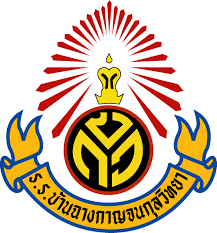

ผู้จัดทำ
ชื่อ นางสาว ปนิตา งอกชัยภูมิ
เกิดเมื่อวันที่ 13 กันยายน พ.ศ. 2550 ปัจจุบันมีอายุ 16 ปี ชื่อเล่น เค้ก
ข้อมูลด้านการศึกษา
ระดับชั้นอนุบาล 1 - ระดับชั้นประถมศึกษาปีที่ 6 ศึกษาที่ โรงเรียนวัดประชุมมิตรบำรุง

ระดับชั้นมัธยมศึกษาปีที่ 1 - ระดับชั้นมัธยมศึกษาปีที่ 3 ศึกษาที่ โรงเรียนบ้านฉางกาญจนกุลวิทยา
ปัจจุบันศึกษาอยู่ในระดับชันประกาศนียบัตรวิชาชีพปี่ที่ 2 สถานศึกษา คือ วิทยาลัยเทคนิคสัตหีบ
งานอดิเรกและสิ่งที่สนใจ
ปัจจุบันมีงานอดิเรก คือ การวาดรูป ฟังพอดแคสต์เกี่ยวกับคดีฆาตกรรม และ เรื่องลี้ลับเหนือธรรมชาติ
สิ่งที่สนใจ คือ สนใจการเขียนโปรแกรมเกี่ยวกับด้านการพัฒนาเกม
แรงบันดาลใจในการเรียนสาขา สท.
แรงบันดาลใจ คือ การได้เข้าทำงานในบริษัทที่เกี่ยวกับการพัฒนาแอพลิเคชั่นหรือเกม
ผลงาน/เกียรติคุณ
การแข่งศิลปหัตถกรรมเกี่ยวกับวิทยาศาสตร์ ตอนระดับชั้นประถมศึกษาปีที่ 5 ได้อันดับที่ 3